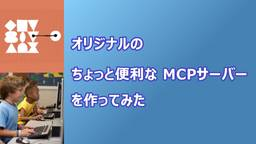
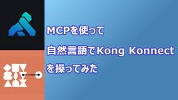
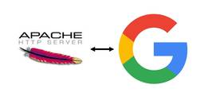

SIOS Tech. Lab
https://tech-lab.sios.jp
サイオステクノロジーのエンジニアが クラウド、OSS、認証に関する様々な情報を提供します。
フィード
RHEL 10 同梱版主要 OSS のバージョンまとめ
SIOS Tech. Lab
こんにちは、OSSよろず相談室の神崎です。RHEL 10 がリリースされたということで、同梱版の OSS のバージョンについて軽くまとめていきたいと思います。 Apache HTTP Server httpd-2.4.6 ...RHEL 10 同梱版主要 OSS のバージョンまとめ first appeared on SIOS Tech. Lab.
4日前

オリジナルのちょっと便利な MCP サーバー を作ってみた 1
1
SIOS Tech. Lab
はじめに こんにちは、サイオステクノロジーの小沼 俊治です。以前の記事ではベンダーが公開されている MCP サーバーを組み込んで利用してみましたが、 もう少し仕組みを理解してみたくなったので、独自で考えた機能を搭載した「 ...オリジナルのちょっと便利な MCP サーバー を作ってみた first appeared on SIOS Tech. Lab.
4日前

MCP を使って 自然言語で Kong Konnect を操ってみた 1
SIOS Tech. Lab
はじめに こんにちは、サイオステクノロジーの小沼 俊治です。私たち API ソリューション サービスラインでパートナーとしてお取り扱いしている商材の一つである、SaaS 型の API マネージメントプラットフォームの K ...MCP を使って 自然言語で Kong Konnect を操ってみた first appeared on SIOS Tech. Lab.
5日前

Google認証機能を持つApache HTTP Webサーバを構築してみた 16
SIOS Tech. Lab
こんにちは、新卒2年目になりました、伊藤です。昨年は、Azure Static Web AppsでGoogle認証機能を持つアプリケーションを作成する方法を紹介しました。https://tech-lab.sios.jp/ ...Google認証機能を持つApache HTTP Webサーバを構築してみた first appeared on SIOS Tech. Lab.
6日前

[web3] Ethereum の Sepolia上のイベントログから ERC-721, ERC-1155 の所有者の見つけ方
SIOS Tech. Lab
概要 こんにちは、サイオステクノロジーの安藤 浩です。 Ethereum のテストネット: Sepolia でフルノードを構築したので フルノードから取得できるトランザクションログやイベントログから ERC-721, E ...[web3] Ethereum の Sepolia上のイベントログから ERC-721, ERC-1155 の所有者の見つけ方 first appeared on SIOS Tech. Lab.
16日前
オープンソースライセンスとは 3 ～OSSにまつわるリアルな事例
SIOS Tech. Lab
こんにちは、OSSよろず相談室の鹿島です。今回も、オープンソースソフトウェア（OSS）に関する話題をお届けします。 これまでの記事では、OSSライセンスの基本や「コピーレフト」について解説しました。 今回は 「OSSにま ...オープンソースライセンスとは 3 ～OSSにまつわるリアルな事例 first appeared on SIOS Tech. Lab.
17日前
オープンソースライセンスとは 2 ～コピーレフトって何だ？
SIOS Tech. Lab
こんにちは、OSSよろず相談室の鹿島です。今回は、前回の OSS（オープンソースソフトウェア）とはどんなものなのかというお話の続きです。 コピーレフトとは？ 今回は OSS ライセンスに関わるキーワード「コピーレフト」に ...オープンソースライセンスとは 2 ～コピーレフトって何だ？ first appeared on SIOS Tech. Lab.
19日前
Rancher Fleetで始めるマルチクラスタGitOpsとは？
SIOS Tech. Lab
はじめに 近年、Kubernetes環境の運用が高度化・複雑化する中で、GitOpsというアプローチが注目を集めています。 GitOpsは特に複数クラスタを運用している場合において、各種設定やアプリケーションの一元管理で ...Rancher Fleetで始めるマルチクラスタGitOpsとは？ first appeared on SIOS Tech. Lab.
25日前
【Azure】AIの安全性を評価するAI Red Teaming Agentのご紹介
SIOS Tech. Lab
こんにちは、サイオステクノロジーの佐藤 陽です。 今回はAIの安全性とセキュリティを加速させる事をテーマに、AzureのAI Red Teaming Agentについてご紹介したいと思います。 なお今回ご紹 ...【Azure】AIの安全性を評価するAI Red Teaming Agentのご紹介 first appeared on SIOS Tech. Lab.
25日前
【2025年4月】OSSサポートエンジニアが気になった！OSS最新ニュース
SIOS Tech. Lab
こんにちは！ 今月も「OSSのサポートエンジニアが気になった！OSSの最新ニュース」をお届けします。 アカマイ・テクノロジーズは、kernel.org にホスティングおよびインフラストラクチャサービスを提供する複数年契約 ...【2025年4月】OSSサポートエンジニアが気になった！OSS最新ニュース first appeared on SIOS Tech. Lab.
25日前